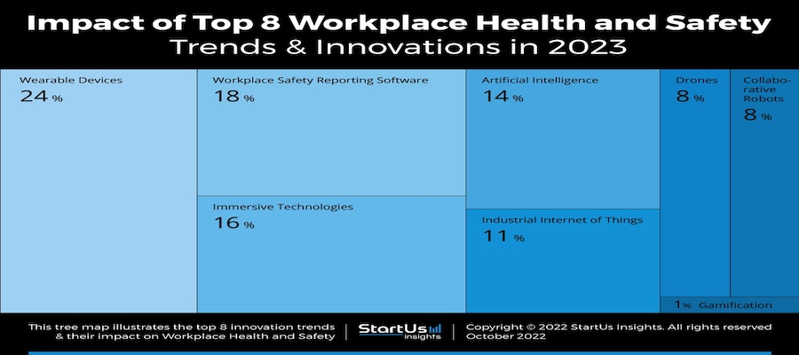

The Role of AI in Near Miss Reporting
Industrial safety has always been a vital concern, affecting not just the well-being of employees but also the overall productivity and profitability of companies. In the realm of workplace safety, near miss reporting plays a crucial role. It involves the documentation and analysis of incidents that had the potential to cause harm but did not lead to any injury or damage. Traditionally, this process has been manual, relying heavily on human observation and reporting, which often leads to underreporting and delayed responses.
The integration of Artificial Intelligence (AI) into this domain is revolutionizing the way near miss incidents are reported and managed. AI-driven systems enhance the accuracy, efficiency, and timeliness of reporting, turning these incidents into valuable learning opportunities and preventing future accidents. With AI, companies can transition from a reactive approach to a proactive and preventive safety strategy.
The importance of this digital transformation in safety management cannot be overstated. According to the U.S. Bureau of Labor Statistics, there were 5,190 fatal work injuries recorded in 2021, with numerous more non-fatal accidents occurring in high-risk environments. These incidents not only result in human loss and suffering but also bring significant business costs ranging from legal fines to productivity losses.
By leveraging technologies such as machine learning, natural language processing, and visual technology, AI systems can efficiently collect and analyze safety incident data. These systems are capable of scanning data streams for early signs of equipment failure, assessing hazards, and generating strategies to mitigate them. This comprehensive approach ensures that safety incidents, including near misses, are detected, analyzed, and reported with minimal human intervention, significantly reducing the risks associated with underreporting.
What is Near Miss Reporting?
In the industrial setting, a near miss is an event that, under slightly different circumstances, could have resulted in injury, illness, or damage to property. It represents a warning sign, indicating potential hazards that demand attention. A safety incident report is a crucial tool in this process. It's a document where a supervisor or safety expert records occurrences that may or may not have caused harm. This report is essential for compliance and understanding the extent of safety risks in an organization.
The traditional approach to near miss reporting often involves manual documentation, dependent on the vigilance and willingness of workers to report these incidents. However, this method comes with challenges, such as the inconsistency in reporting and the subjective nature of human observation, which can lead to significant underreporting.
AI is transforming this aspect of safety management by digitalizing safety incident reports. This shift ensures real-time tracking of incidents, generating detailed information without the typical human and technological challenges. By incorporating AI into safety reporting systems, facilities can benefit from AI's capabilities in detecting, analyzing, and reporting safety incidents and near-misses efficiently and accurately.
This transition to AI-enhanced reporting marks a significant improvement in the way industrial safety is managed, making workplaces safer and more compliant with safety standards.
Challenges in Traditional Near Miss Reporting
Traditional near miss reporting, despite its intentions, faces several challenges that hinder its effectiveness. One of the primary issues is the reliance on manual reporting by workers and safety officers. This dependence often leads to underreporting due to various human factors, such as the perceived insignificance of the incident, fear of repercussion, or simply overlooking the event.
Additionally, the subjective nature of human reporting introduces variability in what is considered a 'near miss.' This inconsistency can lead to a lack of comprehensive data, making it challenging to identify and address systemic safety issues effectively.
The manual process of documenting and analyzing near miss reports is also time-consuming and can delay the implementation of corrective actions. In high-risk environments, where timely intervention is critical, this delay can result in missed opportunities to prevent accidents.
These challenges highlight the need for a more efficient, objective, and proactive approach to near miss reporting – a gap that AI is increasingly filling. By automating the detection and reporting of near miss incidents, AI not only addresses these challenges but also enhances the overall safety management process.
AI in Near Miss Reporting: A Game Changer
AI is revolutionizing near miss reporting in industrial safety by overcoming the limitations of traditional methods. It employs advanced technologies like natural language processing, machine learning, and visual technology to enhance safety management. These technologies collectively aid in the efficient collection and analysis of safety incident data, including near misses
AI-driven systems can monitor workplace environments continuously, using computer vision to detect non-compliance with safety rules, such as PPE requirements. They can also identify early signs of equipment failure and other hazards, thereby proactively addressing potential safety issues before they escalate.
Additionally, AI applications in industrial safety extend to monitoring worker fatigue through facial expression analysis, detecting falls in construction sites, and providing conversational AI for safety compliance and training. These tools collectively contribute to a more comprehensive and effective safety management strategy.
By integrating AI into near miss reporting, industries can benefit from real-time data collection, objective analysis, and prompt reporting of safety incidents. This shift not only enhances workplace safety but also significantly reduces the risks associated with manual reporting processes.
Future of Industrial Safety with AI
The future of industrial safety is on the cusp of a significant evolution, driven by the rapid advancement of AI and related technologies. These innovations are reshaping how safety is managed and perceived in the workplace. Smart personal protective equipment (PPE) and other wearable technologies are becoming increasingly sophisticated, capable of monitoring both the worker's condition and their surroundings, providing real-time health and safety data. This is coupled with the rise of immersive technologies such as virtual and augmented reality, which are revolutionizing safety training by offering immersive, engaging experiences that simulate hazardous scenarios in a safe, controlled environment.
In addition to these, the integration of AI and the Industrial Internet of Things (IIoT) is playing a crucial role in the early detection and prediction of safety hazards. These technologies analyze data from various sources, including sensors, equipment, and surveillance systems, to identify patterns and predict potential accidents, thereby enabling proactive safety measures. Moreover, the use of drones and collaborative robots is reducing the need for human presence in high-risk environments, further enhancing worker safety. Gamification in safety training is also gaining traction, making the learning process more interactive and enjoyable, while effectively conveying critical safety information. Together, these technological advancements are steering industrial safety towards a more data-driven, proactive, and preventive approach, ensuring a safer and more efficient workplace.